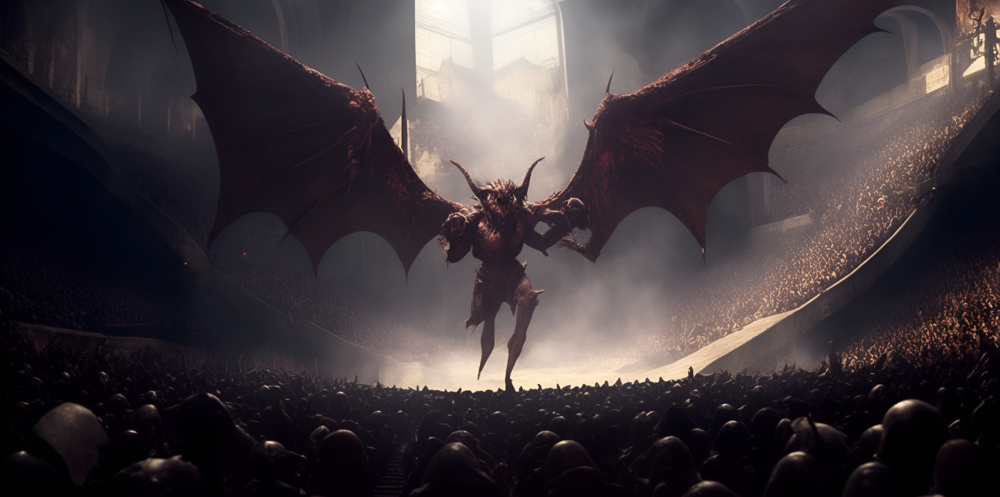

Chapter 5: Gladiators
The Blooming of Macksohn


The Blooming of Macksohn
15048.11.14
一大清早，在白磚石醒來的龍恩和薩梅爾發現夥伴們沒有回到房內，雖然充滿疑惑，但也不知道該往哪去，只好先行前往王宮花園的入口，看看能否在比武大會相遇了。
派頓內的四人，在經過考慮後，決定由YHWH留下來陪伴昏迷的米多莉和背部持續灼傷的安納戴克，由帕拉丁自行前往比武大會。
來到王宮花園的入口，已有一些人聚集在此。龍恩、薩梅爾和帕拉丁會合後，了解了其他夥伴在離開地下城後的現況。同時，一名被稱為喜利，形跡可疑的地精到處繞來繞去打探消息。
不久後，一名王宮的人員前來將花園門口打開，邀請參賽者們一同邁向比賽場地。走入花園深處，打開一扇厚重的金屬雙開門，裡面只有微微火光。東拐西繞，在逐漸失去方向感後，冒險者們走到了一個小房間。王宮人員向大家說明比賽的簡單規則，並給了每個人一個小布袋，裡面有兩把匕首與兩管普通的治療藥水。大家靜靜坐在小房間內，等候自己的名字被呼喚。
在派頓內，YHWH似乎感受到了自己胸口從昨晚開始，便有一股異樣的壓迫感，卻始終找不出這感覺的來源。同時，昏迷的米多莉似乎發現了自己突然有了能用心靈溝通的能力，便試著與他的夥伴們溝通。
不久後，幾名衛兵闖了進來，要帶三位到比武大會的現場去當觀眾。眼看隨行的衛兵人數眾多，冒險者們也打消了反抗的念頭，乖乖地跟著衛兵一起前行（或是被用擔架架著）。到了王宮花園的入口後，他們被矇上了眼，在無法感知附近環境的情況下前行。
來到了比武大會現場，經過麥丁頓現任國王巴納沃二世的開講後，比賽便正式開始。本次參與比賽的人數大約有三十人上下，以單淘汰賽的形式，進行數輪的單淘汰賽，最終會將產出唯一的一名冠軍。
經過了數輪對戰，有的旗鼓相當，有的輕而易舉，最終，踏入總冠軍賽的，是帕拉丁與龍恩兩人。
在總決賽，龍恩大力出擊，不過比起拿下總冠軍，他心中想的是要激發出帕拉丁的鬥志，讓帕拉丁靠著自己的力量拿下總冠軍。而求勝若渴的帕拉丁也努力想勝過龍恩。在龍恩強大的攻勢下，眼看帕拉丁就要接近昏迷，龍恩迅速的向後飛了出去，以高超的演技，讓現場全員都以為他已昏去。然而，同時帕拉丁也應聲倒地，閉上自己的雙眼。
現場工作人員將昏迷的兩人搬到了國王的包廂前。正當國王躊躇著該怎麼辦時，醫護人員發現帕拉丁還清醒著，於是國王便正式宣告「膝蓋粉碎者帕拉丁」為本次比武大會的總冠軍。
在國王巴納沃二世身邊，帕拉丁提出了幾項他的要求：呼喚麥可和希納來到包廂、即刻釋放家亨、讓冒險夥伴們在麥克嵩有舒適的地方居住，以及一張麥克嵩周圍城鎮的地圖。國王逐一承諾，同時，久未現身的家亨被衛兵們從包廂後方架了出來。雖然神情有點恍惚，但看起來沒有太嚴重的傷勢。麥可來到包廂時，便喚醒了龍恩，兩人和家亨一起離開了包廂，回到觀眾席。希納來到了包廂，帕拉丁早向前去，思索了一下，便拍拍他的膝蓋，祝福他好運，希納也就離去了。
接著，國王宣布，封帕拉丁為新任的寇林菲爾德爵士，帕拉丁爵士。雖然帕拉丁表示自己還會繼續去冒險，但國王表示只要一年回去個幾天，讓人民記得他，就可以了，於是帕拉丁也就接下了這個爵位。
接著，帕拉丁和國王問起了從法蘭奇口中聽見的陌生地名，瑟吧諾。正當國王要開口說明時，帕拉丁聽見了從國王背後傳出的緩慢掌聲。兩名衛兵伴隨著一個熟悉的人走了出來。那人是前一天才被台北市議員棄屍於地下道的熟悉面孔，法蘭基。雖然右臂因為被安納戴克揮砍而下垂，但他活生生得出現在帕拉丁面前，還是讓他大吃一驚。法蘭奇將他的手搭在動彈不得的國王肩上，帕拉丁機警地拿起武器。國王大喊救命，身後前來幫忙的刀疤臉卻在法蘭奇一揮下直接倒地不起。然而，周圍傳出了人民哭喊的聲音，以及武器碰撞聲。帕拉丁亦回頭，觀眾席的衛兵早已朝人民們開始攻擊。那些原本表情嚴肅的衛兵，竟露出了邪惡的表情。
觀眾席上的台北市議員們保護著昏迷的米多莉，同時也努力將周圍的衛兵打死；帕拉丁則試圖保護紫羅蘭，但他也看見法蘭奇將國王的精力吸乾，化身為一隻惡魔，朝台北市議員們飛去，留下多位衛兵，逐漸包圍帕拉丁。
回到麥克嵩的雷米，在衛兵的引導下，進入了比武大會的現場，沒想到一眨眼，整個比武大會便陷入了戰鬥之中。雷米看見了幾個月不見的台北市議員夥伴們，在協助將附近幾位衛兵擊倒後，他便朝著稍早看見包廂內的帕拉丁的方向前進，試著去營救他。然而，他突然看見一個和他長得一模一樣的人，出現在他眼前。化身為雷米的沙度將雷米擋住，兩人互相叫囂。
隨著化為惡魔的法蘭奇越飛越近，台北市議員們終於將身邊的衛兵一一擊斃，專心面對法蘭奇。在幾波強力的心靈攻勢下，台北市議員們的狀況逐漸惡化，連要逃跑都不容易。最終，在大家合力圍攻下，法蘭奇透過心靈，傳給冒險者們一句「我會回來的。」後便消失了。看見大事不妙的衛兵們也紛紛逃竄。
隨著衛兵們逃離現場，冒險者們集合在了一起，看著久別重逢的家亨和彷彿變了一個人的雷米，以及這次戰鬥中一同並肩作戰的喜利，大家總算能暫時休息一下。同時，仍未放下警戒的帕拉丁看見遠方包廂內被吸乾精力的巴納沃二世，竟然豎起了身子，彷彿精神飽滿的站了起來，環顧四周後，從包廂後方的簾子後逃離。
冒險者們在競技場穿梭，除了搜刮各式財寶與武器外，也對狀況不穩定的民眾搶救，並尋找自己認識的人們，確認他們的狀況：刀疤臉和麥可確定死透了；大衛醫師、巨斧葛雷格力和弗列里夫婦都陷入昏迷；法朗茲狀況良好，不過對於法蘭奇的襲擊似乎有不少話想和薩梅爾討論；蘿琳飽受驚嚇，在龍恩的陪伴與安撫下情緒穩定了許多；而月先生雖然清醒，但是身上受了不少傷。在大家的協助下，弗列里先生被搬到了大家休息的角落，但弗列里夫人沒這麼幸運，在意外下，帕拉丁不小心將他摔到了競技場內，而在米多莉的檢查下，發現他可能從此再也站不起來了。
同一時間，協助冒險者們的喜利也跟著大家，並和龍恩簡單地互相認識，並說明自己希望加入台北市議員，來幫忙洗刷他們的冤屈。
花了不少時間後，冒險者們決定將甦醒的夥伴們帶回地面，米多莉也將弗列里夫人置於他召喚出的小馬背上，一同離開。走了不久便回到了地面，這裡是王宮花園內部。經過短暫討論後，大家決定前往派頓。
帕拉丁和紫羅蘭討論著他的未來，究竟要回到王宮，還是該去哪裡？紫羅蘭認為麥克嵩發生了這些事，王宮大概也會陷入極大混亂，回去十分危險。在帕拉丁的建議下，決定送紫羅蘭到寇林菲爾德修養，也能和馬格努斯爵士再次見面。
回到派頓後，米多莉和喜利兩人決定再次回到競技場，協助穩定傷患。看見米多莉的善心，喜利也和他說明了自己的來意，以及簡單的自我介紹。在競技場，兩人看見稍早還在昏迷中的大衛醫師已經甦醒了，且正在檢查傷患中，兩人便一起加入幫忙，幾個小時後才出發回派頓。
同時，家亨利用魔法，製作了一些食物，供大家食用。剛脫離險境的安納戴克想趁火打劫，在家亨與雷米的陪伴下，三人一起離開派頓，討論著應該要去哪裡。武器舖？雜貨店？或是民宅？最後，三人決定走上柏納斯山丘，到柏納斯宅邸猛闖一番。
雷米輕鬆地打開了柏納斯宅邸的大門，三人一同走入亮晃晃的長廊中。一扇門、兩扇門，三人一步一步走入深處，然後看見了坐在大廳遠方的三個人：坐在中間的灰鬍子老年男人、右手邊的中年女子，以及左手邊的少年。安納戴克試圖向他們叫囂，然而，隨著老年男人嘴角露出一抹邪笑，三人便陷入了昏迷。
回到派頓的米多莉和喜利發現安納戴克、家亨和雷米三人不在現場，其他人也表示他們稍早想去附近繞繞，卻始終沒有回音。透過感知能力，米多莉沒能找到他們，但感受到他們似乎被什麼鉛製的東西給格擋住了，卻也無法判別方位。疲憊的大家只好先入睡，等隔日早上再看看三人是否安全回來。
不知過了多久，雷米在昏暗的書房內甦醒了。他發現同行的三人口部被布遮蓋，手腳都被繩索捆緊，掙脫不開。在簡單確認後，他感覺身邊兩個夥伴不太對勁，似乎都沒有了生命跡象。雷米扭動著身子，往書房的椅子挪去，想靠各種方法將繩索切斷，卻在同時聽見了門外傳來了步伐聲，便以最快的速度將自己挪回原位，閉上雙眼。
雷米聽見了開門聲，感受到一個身影在三人身後從高處俯瞰……
15048.11.14
Early in the morning, Ron and Samael woke up at White Brick and found that their companions had never returned to their rooms. Though thoroughly puzzled, they had no idea where else to look, so they headed for the entrance to the Royal Garden first, hoping they might run into them at the tournament.
At Patton's, after some discussion, the four decided that YHWH would stay behind with the unconscious Midori and Anedak, whose back was still badly burned, while Paladin would go to the tournament alone.
By the time they reached the entrance to the Royal Garden, some people had already gathered there. After Ron, Samael, and Paladin reunited, they caught one another up on what had happened to the others after leaving the underground complex. At the same time, a suspicious gnome called Siri was skulking around everywhere, trying to gather information.
Before long, a palace official opened the garden gate and invited the contestants to proceed toward the arena. They walked deep into the garden, passed through a heavy set of metal double doors, and entered a dimly lit interior with only faint firelight. After many turns and with their sense of direction fading, the adventurers arrived in a small room. Palace personnel explained the basic rules of the competition and gave each participant a small cloth pouch containing two daggers and two common healing potions. Everyone sat quietly in the room, waiting for their names to be called.
Back at Patton's, YHWH felt a strange pressure in his chest that had been there since the previous night, but could not figure out its source. At the same time, the unconscious Midori seemed to discover that she had suddenly gained the ability to communicate telepathically, and tried using it to contact her companions.
Not long after, several guards burst in to bring the three of them to the tournament as spectators. Seeing how many guards had come along, the adventurers abandoned any thought of resistance and obediently went with them, whether on foot or carried on a stretcher. Once they reached the entrance to the Royal Garden, they were blindfolded and led onward without being able to sense their surroundings.
At the tournament arena, after a speech from Mattington's current king, Benevol II, the competition officially began. There were roughly thirty participants this time. The tournament followed a single-elimination format through several rounds, until only one champion would remain.
After several matches, some close and some easy, the two who ultimately made it to the championship final were Paladin and Ron.
In the final match, Ron attacked fiercely, but more than winning the championship for himself, what he truly wanted was to draw out Paladin's fighting spirit and push Paladin to seize the title through his own strength. Paladin, hungry for victory, fought just as hard to overcome Ron. Under Ron's overwhelming offense, Paladin seemed to be on the verge of collapse, but then Ron suddenly hurled himself backward and, through masterful acting, made everyone present believe he had been knocked unconscious. At the same moment, Paladin also fell to the ground and closed his eyes.
The arena staff carried the two apparently unconscious fighters before the king's box. Just as the king was hesitating over what to do, the medics discovered that Paladin was still conscious, and so the king formally declared "Paladin, the Knee Crusher" the champion of this year's tournament.
Standing beside King Benevol II, Paladin made several demands: that Michael and Cena be summoned to the royal box, that Jiaheng be released immediately, that his adventuring companions be given a comfortable place to stay in Macksohn, and that he receive a map of the towns around Macksohn. The king agreed to each request in turn. At the same time, Jiaheng, long absent, was escorted out by guards from behind the royal box. Though he looked somewhat dazed, he did not appear badly injured. When Michael arrived at the box, he woke Ron up, and the two of them left with Jiaheng and returned to the audience seats. Cena then came to the box as well. Paladin stepped forward, thought for a moment, and then patted him on the knee and wished him good luck, after which Cena departed.
Next, the king announced that Paladin would be invested as the new Syr of Korringfield: Syr Paladin. Though Paladin said that he still intended to continue adventuring, the king replied that it would be enough if he returned a few days a year so that the people would remember him. Paladin therefore accepted the title.
Afterward, Paladin and the king discussed the unfamiliar place name they had heard from Frankie: Sebano. Just as the king was about to explain, Paladin heard slow applause coming from behind the king. Two guards emerged alongside a familiar figure. It was Frankie, the very same face the Taipei City Councilors had left for dead in the underground passage the day before. Though his right arm hung limp from the wound Anedak had dealt him, seeing him standing there alive still came as a tremendous shock. Frankie rested a hand on the king's immobilized shoulder, and Paladin immediately snatched up his weapon. The king cried out for help, but Scar-Face, rushing in from behind to assist, was felled instantly by a single swipe from Frankie. At the same time, the sound of people screaming and weapons clashing echoed around them. Turning around, Paladin saw that the guards in the stands had already begun attacking the crowd. Those guards who had once looked stern now wore openly wicked expressions.
In the audience stands, the Taipei City Councilors protected the unconscious Midori while also killing the nearby guards one by one. Paladin, for his part, tried to shield the Violet. But he also witnessed Frankie drain the king's vitality, transform into a demon, and fly toward the Taipei City Councilors, leaving more guards behind to gradually surround Paladin.
Lemmy, having returned to Macksohn, entered the tournament grounds under the guidance of the guards, only to see the entire tournament explode into battle in the blink of an eye. He spotted the Taipei City Councilor companions he had not seen in months, and after helping knock down several nearby guards, he started heading toward the royal box where he had seen Paladin earlier, trying to rescue him. But suddenly, he saw someone who looked exactly like himself appear before him. Sha'Doom, disguised as Lemmy, blocked his path, and the two began shouting at each other.
As demonic Frankie drew ever nearer, the Taipei City Councilors finally finished off the guards around them and turned their full attention to Frankie. Under several powerful psychic assaults, their condition worsened rapidly, and even fleeing became difficult. In the end, after the group surrounded and attacked him together, Frankie sent a message into their minds, saying, "I'll be back," and then vanished. Realizing the situation had turned disastrous, the remaining guards fled in all directions as well.
Once the guards had fled the scene, the adventurers gathered together. Looking at the long-lost Jiaheng, at Lemmy who seemed like a completely different person, and at Siri, who had fought alongside them in the battle, everyone was finally able to rest for a moment. At the same time, Paladin, still refusing to drop his guard, noticed something in the distant royal box: Benevol II, whose vitality had been drained away, suddenly sat upright and rose to his feet looking strangely full of energy. After glancing around, he fled behind the curtain at the back of the box.
The adventurers moved throughout the arena, not only looting valuables and weapons but also rescuing civilians in unstable condition and searching for people they knew to check on them. Scar-Face and Michael were confirmed dead. Dr. David, Gregory the Axe, and Syr Flaerry and his wife had all fallen unconscious. Franz was in good condition, though he seemed to have a great deal he wanted to discuss with Samael about Frankie's attack. Roline was badly shaken, but with Ron by her side comforting her, she calmed down considerably. Mr. Moon was conscious, though badly injured. With everyone's help, Syr Flaerry was moved to the group's resting corner. Lady Flaerry was less fortunate; through an accident, Paladin dropped her back into the arena, and Midori's examination suggested that she might never be able to stand again.
At the same time, Siri, who had helped the adventurers, stayed with the group, introduced himself briefly to Ron, and explained that he hoped to join the Taipei City Councilors and help clear their names.
After spending quite a while at it, the adventurers decided to bring their recovering companions back up to the surface. Midori placed Lady Flaerry on the small pony she had summoned, and they all left together. Not long after, they returned to the surface within the Royal Garden itself. After a brief discussion, everyone decided to head to Patton's.
Paladin and the Violet discussed her future. Should she return to the palace, or go elsewhere? The Violet thought that after what had happened in Macksohn, the palace would likely descend into total chaos and would be extremely dangerous to return to. At Paladin's suggestion, they decided to send the Violet to Korringfield to recover there, where she could also see Syr Magnus again.
After returning to Patton's, Midori and Siri decided to head back to the arena once more and help stabilize the wounded. Seeing Midori's compassion, Siri also explained his reasons for wanting to join them and gave a brief self-introduction. At the arena, they found that Dr. David, who had still been unconscious not long before, had already awakened and was examining the injured. The two of them joined in to help, and only returned to Patton's several hours later.
Meanwhile, Jiaheng used magic to create some food for everyone to eat. Anedak, having only just escaped danger, wanted to take advantage of the chaos and loot something. Accompanied by Jiaheng and Lemmy, the three left Patton's together and discussed where to go. A weapon shop? A general store? Someone's house? In the end, the three decided to climb Berners Hill and force their way into the Berners estate.
Lemmy easily opened the great doors of the Berners estate, and the three walked together into a brightly lit corridor. One door, then another, they moved deeper and deeper inside until they saw three people seated far away in the hall: an elderly gray-bearded man in the center, an mid-aged woman on his right, and a youth on his left. Anedak tried to shout something at them, but the old man's lips curled into a wicked smile, and all three intruders immediately fell unconscious.
When Midori and Siri returned to Patton's, they discovered that Anedak, Jiaheng, and Lemmy were nowhere to be found. The others said the three had gone to look around nearby some time earlier, but no word had come back. Using her powers of perception, Midori could not locate them, only sense that something made of lead seemed to be blocking her from them, though she could not determine the direction. Exhausted, everyone had no choice but to go to sleep and see the following morning whether the three would return safely.
After an unknown length of time, Lemmy awoke in a dark study. He found that the mouths of all three companions had been covered with cloth, and their hands and feet had been tightly bound with rope. After a quick check, he sensed that the two companions beside him were not right at all. They seemed to show no signs of life. Lemmy twisted his body and inched toward a chair in the study, trying every possible way to cut through the ropes, but then heard footsteps approaching outside the door. He hurriedly wriggled back into place as fast as he could and shut his eyes.
Lemmy heard the door open and felt a figure looming over the three of them from above...